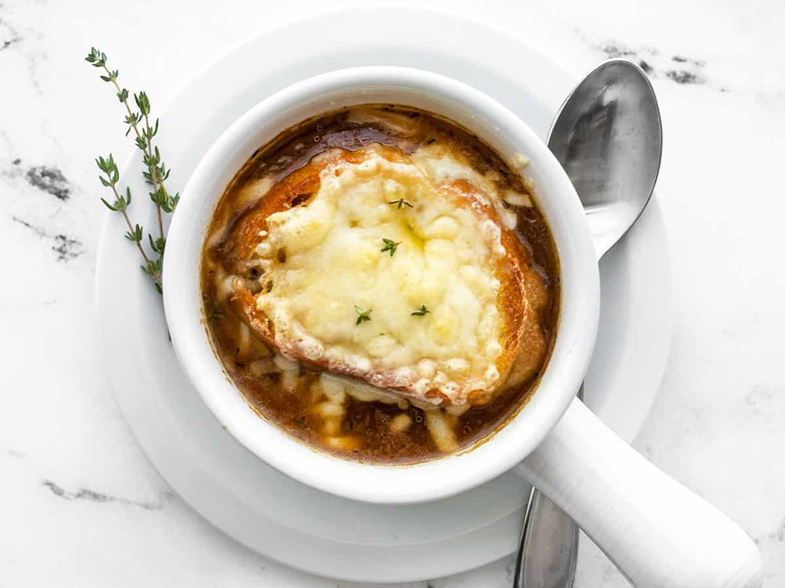

French Onion Soup

Description
French onion soup is a soup usually based on meat stock and onions, and often served gratinéed with croutons or a larger piece of bread covered with cheese floating on top.
Ingredients
- 6 large red or yellow onions
- 4 tablespoons extra virgin olive oil
- 2 tablespoons butter
- 1 teaspoon sugar
- 2 garlic cloves
- 8 cups of beef stock
Steps
- Caramelize the onions
- Deglaze the pot with vermouth or wine
- Add the stock, bay leaves, and thyme
- Toast the French bread slices
- Serve